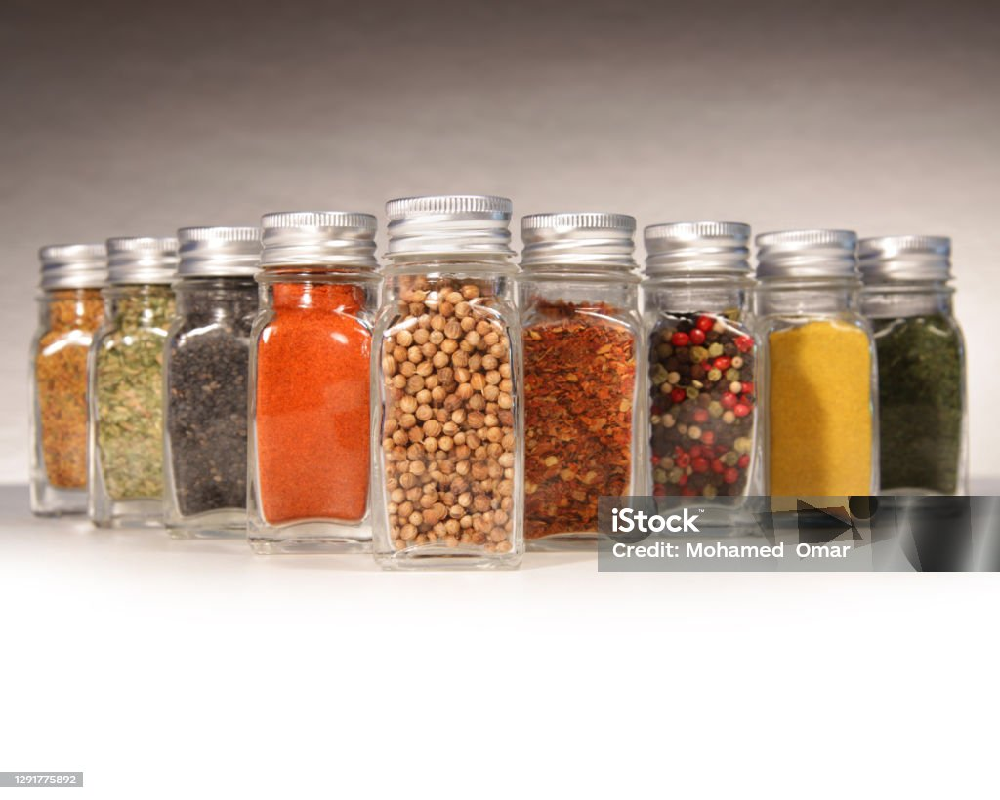
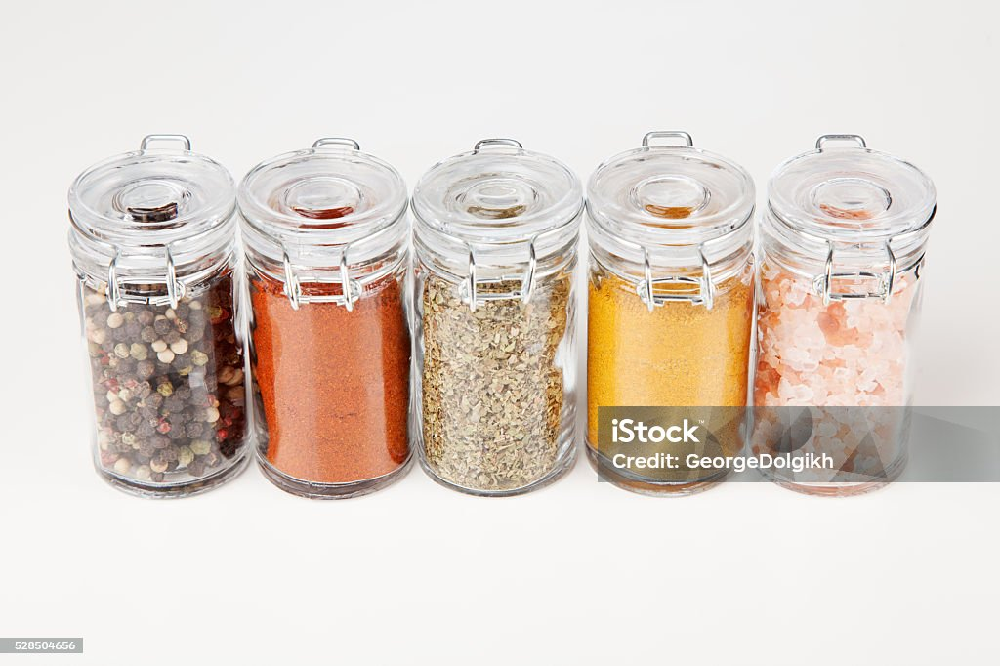
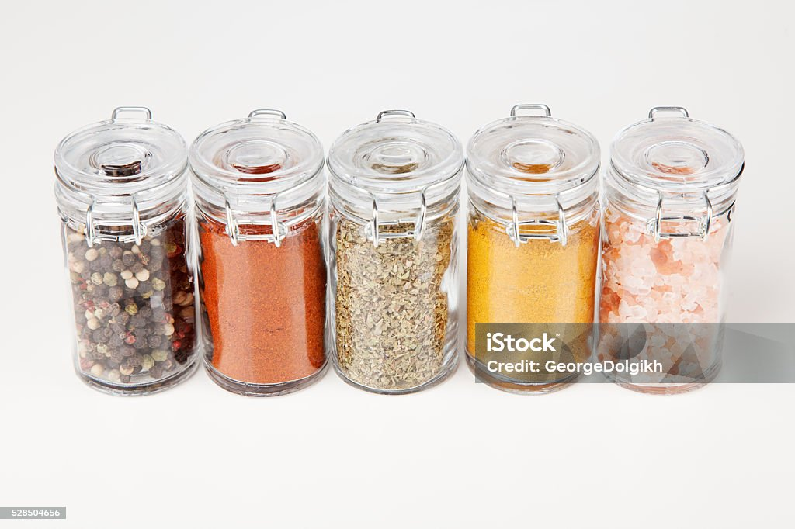

Founded in 1957,The Spice House is a purveyor of the finest spices, herbs,
signature blends, and premium extracts. We’ve spent over 60 years
curating our global network of premium growers and distributors in
order to offer our customers unrivaled quality and selection.
Our Origins
.jpg) The Spice House was born in post-war, fast-paced America by founders Bill Sr. and Ruth Penzey. They sited the business at the western terminus of America’s most storied shipping waterway, giving them a global reach as they aspired to source the world’s finest spices. Armed with a discerning palate, a love of foreign cultures, and an unrelenting obsession to unearth the finest growers of spices worldwide, they built their network. It was a labor of love, and everyone in the family was involved. Their daughter Patty grew up working in the store, wielding large stainless-steel scoops, operating old-style mills and sifters, and acquiring an encyclopedic knowledge of spices.
When the time came, Bill Sr. and Ruth passed ownership of The Spice House to the second generation—Patty Erd and her husband, Tom Erd. Patty and Tom infused the business with their own zeal and creativity, expanding to many more physical locations and bringing the business into the 21st century with the launch of thespicehouse.com. Frequently sought after as expert speakers and guests of honor at culinary events, Patty and Tom continued to build The Spice House’s reputation as a trusted purveyor of the freshest and highest quality spices. Under their leadership, The Spice House garnered coverage from premier cooking publications including Cook’s Illustrated and Bon Appetit, along with numerous accolades and awards.
In 2018, with kismet and good fortune, business partners Dave Grossman and Dan Yates met and befriended Tom and Patty. Dave and Dan had respectively built successful careers in finance and technology, and were both wanting for a mission more tangible and human scale, something to love and share with family and friends. With a shared passion for food and culture, they saw the untapped potential stored up in the lifetimes of work and expertise that Bill, Ruth, Patty and Tom had poured into the Spice House. Happily, Tom and Patty also saw something in Dan and Dave—successful business builders who could bring their vision to a national and then global scale.

Our Future
The company’s core tenets of premium quality, freshness, and
variety—all the while honoring culinary traditions and experiences
around the world. The next generation of Spice House merchants is
elevating the delivery of spices with purposefully designed jars
and refill packs, ease of online ordering for personal purchases
and gifts, and expanded access to world-class recipes and professional
guidance.
The Spice House was born in post-war, fast-paced America by founders Bill Sr. and Ruth Penzey. They sited the business at the western terminus of America’s most storied shipping waterway, giving them a global reach as they aspired to source the world’s finest spices. Armed with a discerning palate, a love of foreign cultures, and an unrelenting obsession to unearth the finest growers of spices worldwide, they built their network. It was a labor of love, and everyone in the family was involved. Their daughter Patty grew up working in the store, wielding large stainless-steel scoops, operating old-style mills and sifters, and acquiring an encyclopedic knowledge of spices.
When the time came, Bill Sr. and Ruth passed ownership of The Spice House to the second generation—Patty Erd and her husband, Tom Erd. Patty and Tom infused the business with their own zeal and creativity, expanding to many more physical locations and bringing the business into the 21st century with the launch of thespicehouse.com. Frequently sought after as expert speakers and guests of honor at culinary events, Patty and Tom continued to build The Spice House’s reputation as a trusted purveyor of the freshest and highest quality spices. Under their leadership, The Spice House garnered coverage from premier cooking publications including Cook’s Illustrated and Bon Appetit, along with numerous accolades and awards.
In 2018, with kismet and good fortune, business partners Dave Grossman and Dan Yates met and befriended Tom and Patty. Dave and Dan had respectively built successful careers in finance and technology, and were both wanting for a mission more tangible and human scale, something to love and share with family and friends. With a shared passion for food and culture, they saw the untapped potential stored up in the lifetimes of work and expertise that Bill, Ruth, Patty and Tom had poured into the Spice House. Happily, Tom and Patty also saw something in Dan and Dave—successful business builders who could bring their vision to a national and then global scale.

Our Future
The company’s core tenets of premium quality, freshness, and
variety—all the while honoring culinary traditions and experiences
around the world. The next generation of Spice House merchants is
elevating the delivery of spices with purposefully designed jars
and refill packs, ease of online ordering for personal purchases
and gifts, and expanded access to world-class recipes and professional
guidance.